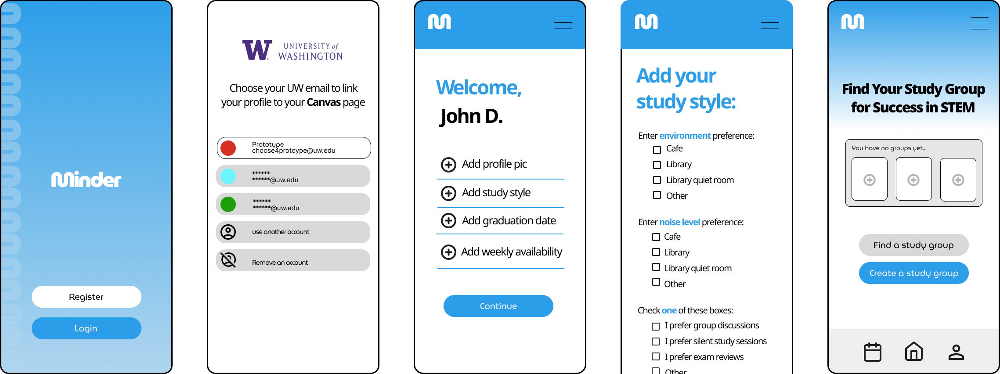
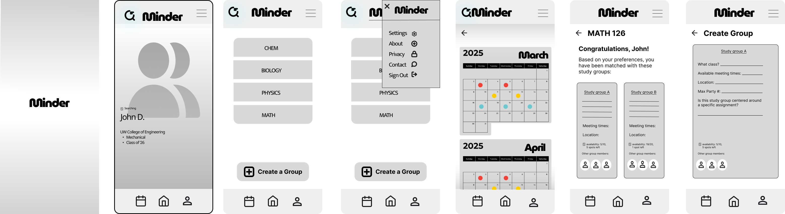

Helping people navigate a meaningful everyday moment.
Project Name
The Moment
The Moment
A real quote from a participant that captures the human tension in everyday life.
Participant role or context
Open with a narrative scene — where someone is, what they are trying to do, and what feels harder than it should. Avoid jumping straight into design language.
Close this section with a sentence that reframes the situation. The reader should feel the problem before they analyze it.
The Solution
The Solution
Introduce the design right after the problem — show what you made and why it matters, before diving into research or process.

Key features
Experience moment, not feature name
Describe one capability that makes the product stand out — what it enables people to do or feel. Frame it as an experience, not a spec sheet item.

Another defining detail
A second feature or interaction that shows intentional design. For space projects, describe a spatial moment — how the environment shapes behavior — rather than a UI screen.

Why It Mattered
What was really at stake for people navigating this moment.
Explain why this problem deserved attention — not in business terms, but in human terms. What everyday experience was being shaped? What felt normal that was actually creating friction?
One clear insight line that captures the opportunity in plain language.

What We Learned
What We Learned
Share understanding as a story — not a methods dump. Focus on what changed how you thought.
Behavioral pattern
Describe a recurring behavior, workaround, or tension you observed across participants.
A second voice from research that deepens empathy or reveals nuance.
Research participant

Design Process
Design Process
Walk through how the work evolved — sketches, wireframes, prototypes, and the decisions behind them.
Experience moment, not feature name
Explain one design decision: what you tried, what you rejected, and why this direction honored the insight above.
Another iteration or decision point
Describe a pivot, constraint, or tradeoff. Keep the focus on intention, not output volume.
Reflection
Reflection
What I learned
- What this project taught you about designing for everyday behavior.
- What surprised you — a research finding, a decision, or a collaboration moment.
What I would improve
- What you would explore further or do differently with more time.
One honest sentence about how this work shaped you as a designer.
Team, course, or acknowledgments — keep brief and human.